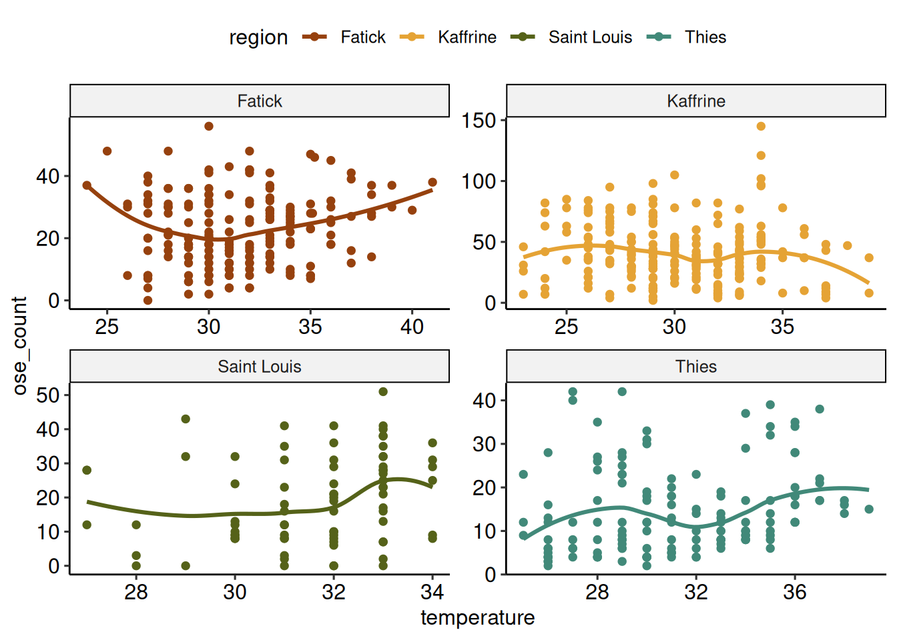
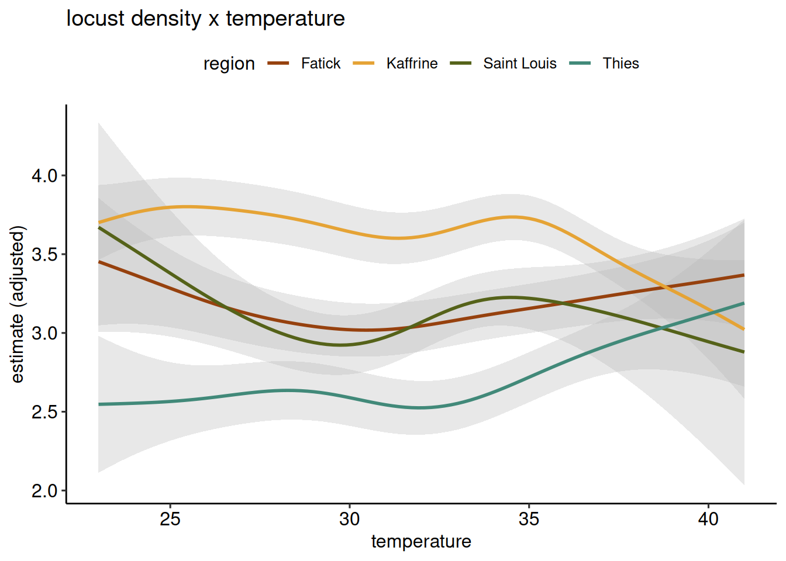

2021 Locust x Temperature
How is locust density related to temperature through the missions
We would like to model the influence of temperature on locust density. Lets plot the raw data by region to see how it falls. I also removed the fertilizer plots since this variable influences OSE counts.
The raw plots do not look very compelling, but lets construct a quick generalized additive model and see if there is a statistically significant trend.

There seems to be some positive realationship between temperature and locust denisty for Fatick, Saint Louis, and Thies. Kaffrine is a different relationship, however I wonder if this is partially still driven by the high densities in the first mission.
Here is the model summary for what it’s worth:
| Locust x Temperature model summary | ||||||||
| Component | Term | Estimate | Std. Error | t / F | p-value | edf | Ref.df | Value |
|---|---|---|---|---|---|---|---|---|
| Parametric | (Intercept) | 3.129 | 0.209 | 14.964 | 0.000 | NA | NA | NA |
| Smooth | s(temperature,region) | NA | NA | 10.088 | 0.000 | 11.782 | 37.000 | NA |
| Smooth | s(farmer) | NA | NA | 0.000 | 0.659 | 0.005 | 226.000 | NA |
| Smooth | s(mission_number) | NA | NA | 33.182 | 0.000 | 1.944 | 2.000 | NA |
| Model | R-sq (adj) | NA | NA | NA | NA | NA | NA | 0.388 |
| Model | Deviance explained | NA | NA | NA | NA | NA | NA | 39.900% |
| Model | REML | NA | NA | NA | NA | NA | NA | 2501.900 |
| Model | Scale est. | NA | NA | NA | NA | NA | NA | 2.451 |
| Model | n | NA | NA | NA | NA | NA | NA | 624 |